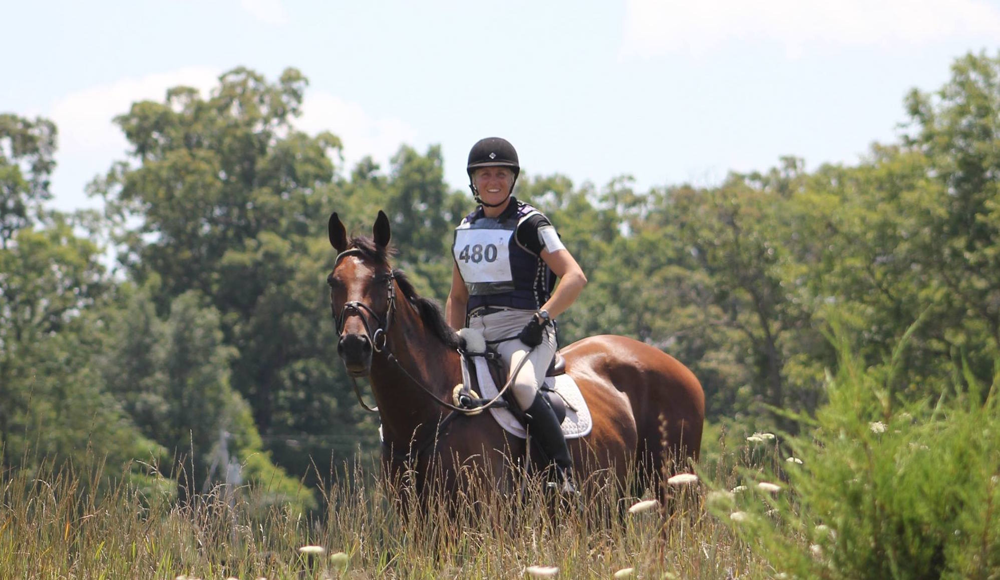

Equestrianism (from Latin equester, equestr-, horseman, horse)[1] more often known as riding, horseback riding (American English) or horse riding (British English)[2] referring to the skill of riding, driving, steeplechasing or vaulting with horses. This broad description includes the use of horses for practical working purposes, transportation, recreational activities, artistic or cultural exercises, and competitive sport.
Overview
Horses are trained and ridden for practical working purposes such as in police work or for controlling herd animals on a ranch. They are also used in competitive sports including, but not limited to, dressage, endurance riding, eventing, reining, show jumping, tent pegging, vaulting, polo, horse racing, driving, and rodeo. Some popular forms of competition are grouped together at horse shows, where horses perform in a wide variety of disciplines. Horses (and other equids such as mules and donkeys) are used for non-competitive recreational riding such as fox hunting, trail riding or hacking. There is public access to horse trails in almost every part of the world; many parks, ranches, and public stables offer both guided and independent riding. Horses are also used for therapeutic purposes, both in specialized paraequestrian competition as well as non-competitive riding to improve human health and emotional development.
Horses are also driven in harness racing, at horse shows and in other types of exhibition, historical reenactment or ceremony, often pulling carriages. In some parts of the world, they are still used for practical purposes such as farming.
Horses continue to be used in public service: in traditional ceremonies (parades, funerals), police and volunteer mounted patrols, and for mounted search and rescue.
Riding halls enable the training of horse and rider in all weathers as well as indoor competition riding.
Top of pageHistory of Horse Use
Though there is controversy over the exact date horses were domesticated and when they were first ridden, the best estimate is that horses first were ridden approximately 4500 BC. Indirect evidence suggests that horses were ridden long before they were driven. There is some evidence that about 6,000 years ago, near the Dnieper River and the Don River, people were using bits on horses, as a stallion that was buried there shows teeth wear consistent with using a bit.[3] However, the most unequivocal early archaeological evidence of equines put to working use was of horses being driven. Chariot burials about 2500 BC present the most direct hard evidence of horses used as working animals. In ancient times chariot warfare was followed by the use of war horses as light and heavy cavalry. The horse played an important role throughout human history all over the world, both in warfare and in peaceful pursuits such as transportation, trade and agriculture. Horses lived in North America, but died out at the end of the Ice Age. Horses were brought back to North America by European explorers, beginning with the second voyage of Columbus in 1493.[4]
Top of pageHorse Racing
Humans appear to have long expressed a desire to know which horse (or horses) were the fastest, and horse racing has ancient roots. Gambling on horse races appears to go hand-in hand with racing and has a long history as well. Thoroughbreds have the pre-eminent reputation as a racing breed, but other breeds also race.
Top of pageTypes of Horse Racing
- Under Saddle
- Thoroughbred horse racing is the most popular form worldwide. In the UK, it is known as flat racing and is governed by the Jockey Club in the United Kingdom. In the USA, horse racing is governed by The Jockey Club.
- Steeplechasing involves racing on a track where the horses also jump over obstacles. It is most common in the UK, where it is also called National Hunt racing.
- American Quarter Horse racing—races over distances of approximately a quarter-mile. Seen mostly in the United States, sanctioned by the American Quarter Horse Association.
- Arabian horses, Akhal-Teke, Appaloosas, American Paint Horses and other light breeds are also raced worldwide.
- Endurance riding, a sport in which the Arabian horse dominates at the top levels, has become very popular in the United States and in Europe. The Federation Equestre International (FEI) governs international races, and the American Endurance Ride Conference (AERC) organizes the sport in North America. Endurance races take place over a given, measured distance and the horses have an even start. Races begin at 20 miles (32 km) and peak at 100 miles (160 km), especially the Tevis Cup.
- Ride and Tie (in North America, organized by Ride and Tie Association). Ride and Tie involves three equal partners: two humans and one horse. The humans alternately run and ride.
- In Harness
- Both light and heavy breeds as well as ponies are raced in harness with a sulky or racing bike. The Standardbred dominates the sport in both trotting and pacing varieties.
- The United States Trotting Association organizes harness racing in the United States.
- Harness racing is also found throughout Europe, New Zealand and Australia.
International and Olympic Disciplines
Equestrian events were first included in the modern Olympic Games in 1900. By 1912, all three Olympic disciplines still seen today were part of the games. The following forms of competition are recognized worldwide and are a part of the equestrian events at the Olympics. They are governed by the rules of the International Federation for Equestrian Sports (FEI).
- Dressage ("training" in French) involves the progressive training of the horse to a high level of impulsion, collection, and obedience. Competitive dressage has the goal of showing the horse carrying out, on request, the natural movements that it performs without thinking while running loose.
- Show jumping comprises a timed event judged on the ability of the horse and rider to jump over a series of obstacles, in a given order and with the fewest refusals or knockdowns of portions of the obstacles.
- Eventing, also called combined training, horse trials, the three-day event, the Military, or the complete test, puts together the obedience of dressage with the athletic ability of show jumping, the fitness demands the cross-country jumping phase. In the last-named, the horses jump over fixed obstacles, such as logs, stone walls, banks, ditches, and water, trying to finish the course under the "optimum time." There was also the 'Steeple Chase' Phase, which is now excluded from most major competitions to bring them in line with the Olympic standard.
The additional internationally sanctioned but non-Olympic disciplines governed by the FEI are: combined driving; endurance; reining; and vaulting. These disciplines are part of the FEI World Equestrian Games every four years, and may hold their own individual World Championships in other years. The FEI also recognizes horseball and tent pegging as its two regional disciplines.
Top of pageHorse Shows
Horse shows are held throughout the world with a tremendous variety of possible events, equipment, attire and judging standards used. However, most forms of horse show competition can be broken into the following broad categories:
- Equitation, sometimes called seat and hands or horsemanship, refers to events where the rider is judged on form, style and ability.
- Pleasure, flat, or under saddle classes feature horses who are ridden on the flat (not jumped) and judged on manners, performance, movement, style and quality.
- Halter, in-hand breeding, or conformation classes, where the horse is led by a handler on the ground and judged on conformation and suitability as a breeding animal.
- Harness classes, where the horse is driven rather than ridden, but still judged on manners, performance and quality.
- Jumping or Over Fences refers broadly to both show jumping and show hunter, where horses and riders must jump obstacles.
English Riding
In addition to the classical Olympic events, the following forms of competition are seen. In North America they are referred to as "English riding" in contrast with western-style riding; elsewhere in the world, if a distinction is necessary, they are usually described as "classic riding":
- Hunt seat or Hunter classes judge the movement and the form of horses suitable for work over fences. A typical show hunter division would include classes over fences as well as "Hunter under Saddle" or "flat" classes (sometimes called "hack" classes), in which the horse is judged on its performance, manners and movement without having to jump. Hunters have a long, flat-kneed trot, sometimes called "daisy cutter" movement, a phrase suggesting a good hunter could slice daisies in a field when it reaches its stride out. The over fences classes in show hunter competition are judged on the form of the horse, its manners and the smoothness of the course. A horse with good jumping form snaps its knees up and jumps with a good bascule. It should also be able to canter or gallop with control while having a stride long enough to make a proper number of strides over a given distance between fences.
- Eventing, show jumping, and dressage, described under "Olympic disciplines," above are all "English" riding disciplines that in North America sometimes are loosely classified within the "hunt seat" category.
- Saddle seat, is a primarily American discipline, though has recently become somewhat popular in South Africa, was created to show to best advantage the animated movement of high-stepping and gaited breeds such as the American Saddlebred and the Tennessee Walker. Some Arabians and Morgans are also shown saddle seat in the United States. There are usually three basic divisions. Park divisions are for the horses with the highest action. Pleasure divisions still emphasis animated action, but to a lesser degree, with manners ranking over animation. Plantation or Country divisions have the least amount of animation (in some breeds, the horses are flat-shod) and the greatest emphasis on manners.
- Show hack is a competition seen primarily in the United Kingdom, Australia, and other nations influenced by British traditions, featuring horses of elegant appearance, with excellent way of going and self-carriage. A related event is Riding Horse.

Western Riding
Western riding evolved from the cattle-working and warfare traditions brought to the Americas by the Spanish Conquistadors, and both equipment and riding style evolved to meet the working needs of the cowboy on ranches in the American West.
Though the differences between English and Western riding appear dramatic, there are more similarities than most people think. Both styles require riders to have a solid seat, with the hips and shoulders balanced over the feet, with hands independent of the seat so as to avoid disturbing the balance of the horse and interfering with its performance.
The most noticeable feature of western style riding is in the saddle, which has a substantial tree that provides greater support to horse and rider when working long hours in the saddle. The western saddle features a prominent pommel topped by a horn (a knob used for dallying a lariat after roping an animal), a deep seat and a high cantle. The stirrups are wider and the saddle has rings and ties that allow objects to be attached to the saddle.
Western horses are asked to perform with a loose rein, controlled by one hand. The standard western bridle lacks a noseband and usually consists of a single set of reins attached to a curb bit that has somewhat longer and looser shanks than the curb of an English Weymouth bridle or a pelham bit. Two styles of Western reins developed: The long split reins of the Texas tradition, which are completely separated, or the closed-end "Romal" reins of the California tradition, which have a long single attachment on the ends that can be used as a quirt. Modern rodeo competitors in timed events sometimes use a closed rein without a romal.
Western riders wear a long-sleeved shirt, denim jeans, boots, and a wide-brimmed cowboy hat. Cowboy boots, which have pointed toes and higher heels than a traditional riding boot, are designed to prevent the rider's foot from slipping through the stirrup during a fall, preventing the rider from being dragged—most western saddles have no safety bars for the leathers or automatic stirrup release mechanism. A rider may wear protective leather leggings called chaps. Clean, well-fitting work clothing is the usual outfit seen in rodeo, cutting and reining competitions, especially for men, though sometimes both men and women wear brighter colors or finer fabrics for competition than for work.

Show events such as Western pleasure use much flashier equipment, unlike the English traditions where clothing and tack is quiet and unobtrusive. Saddles, bits and bridles are ornamented with substantial amounts of silver. The rider may add a jacket or vest, and women's clothing in particular features vivid colors and even, depending on current fads, rhinestones or sequins.[7]
Western horses are asked to have a brisk, ground-covering walk, but a slow, relaxed jog trot that allows the rider to sit the saddle and not post. The Western version of the canter is called a lope and while collected and balanced, is expected to be slow and relaxed. Working western horses seldom use a sustained hand gallop, but must be able to accelerate quickly to high speed when chasing cattle or competing in rodeo speed events, must be able to stop quickly from a dead run and "turn on a dime."
Gallery


Total Horseback Riding Related Deaths
| Year | Number of Deaths |
|---|---|
| 2005 | 239 |
| 2006 | 157 |
| 2007 | 217 |
| 2008 | 201 |
| 2009 | 187 |
| 2010 | 159 |
| 2011 | 132 |
| 2012 | 106 |
| 2013 | 176 |
| 2014 | 123 |